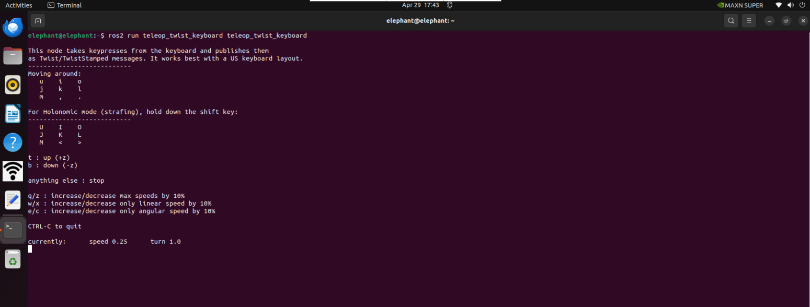
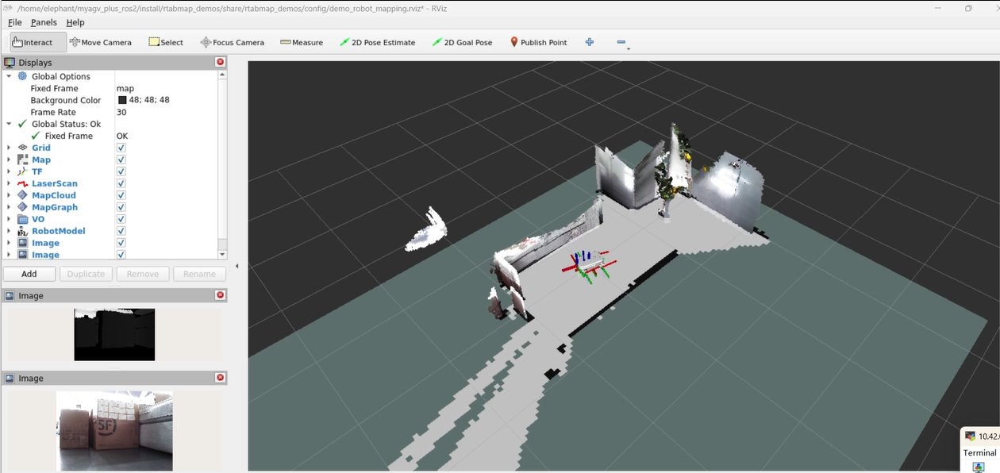
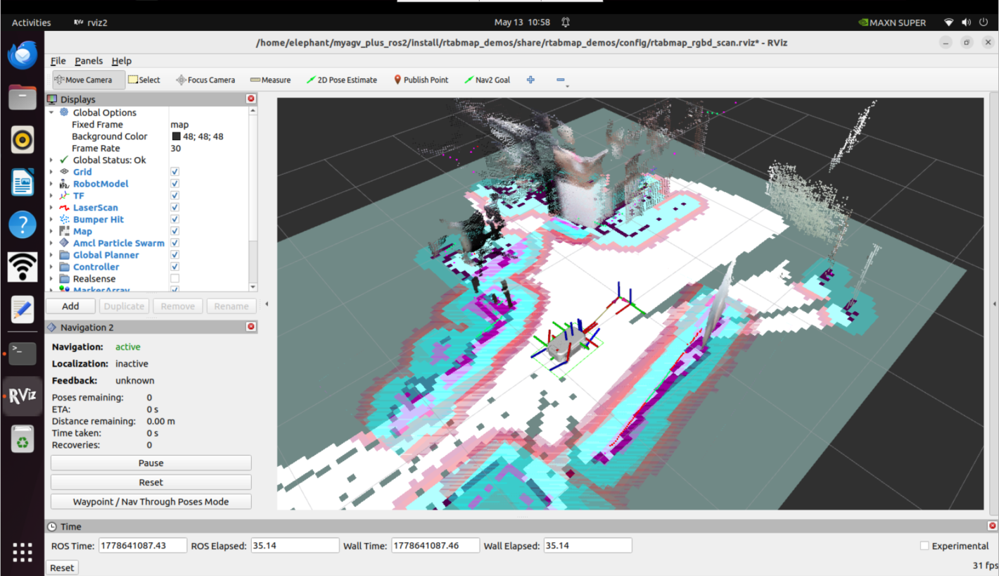
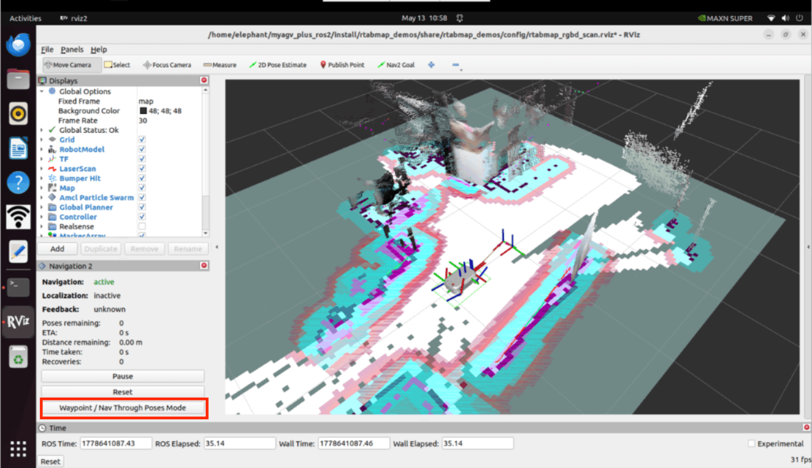
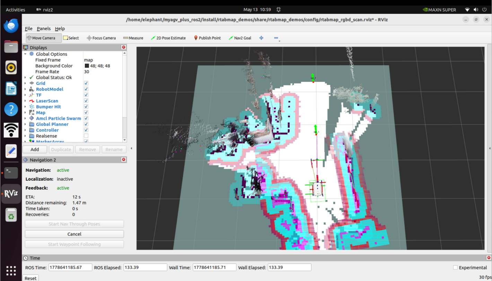
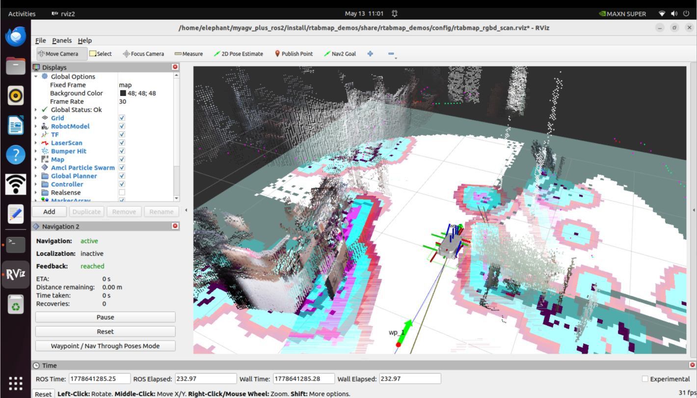

myAGV Plus-rtabmap build map
Open slam laser scanning launch file
First, check whether the LiDAR is powered on and enabled. If it is not on, the terminal needs to start the LiDAR by powering it on through a script file. If the LiDAR is powered on and enabled, the step of powering on and enabling the LiDAR can be skipped.
sudo busybox devmem 0x2434098 w 0x000
python start_ydlidar.py
ros2 launch ydlidar_ros2_driver ydlidar_launch.py
After powering on and enabling the radar, open 3 console terminals (shortcut Ctrl Alt T), and enter the following commands in the command line respectively:
//Start the odometer and LiDAR
ros2 launch myagv_plus_bringup myagv_plus_bringup.launch.py
//Launch the corresponding launch file for the depth camera
ros2 launch orbbec_camera astra_pro2.launch
//Start the rtabamp mapping algorithm
ros2 launch rtabmap_demos robot_mapping_demo.launch.py rviz:=true rtabmap_viz:=false
2.Open the keyboard control file
Open a new terminal console and enter the following command in the terminal command line:
ros2 run teleop_twist_keyboard teleop_twist_keyboard

| Button | Direction |
|---|---|
| i | Forward |
| , | Backward |
| j | Move Left |
| l | Move Right |
| u | Move to the left-front |
| o | Move to the right-front |
| k | Stop |
| m | Move to the left-rear |
| . | Move to the right-rear |
| Shift + j | Move to the left |
| Shift + l | Move to the right |
| Shift + u | Move forward to the left |
| Shift + o | Move forward to the right |
| Shift + m | Move backward to the left |
| Shift + . | Move backward to the left |
| q | Increase Linear and Angular Velocity |
| z | Decrease Linear and Angular Velocity |
| w | Increase Linear Velocity |
| x | Decrease Linear Velocity |
| e | Increase Angular Velocity |
| c | Decrease Angular Velocity |

Now the robot car can start moving under keyboard control. Operate the car to make a round in the space where you want to map. At the same time, you can see that in the Rviz space, our map is gradually being built as the car moves.
Note: When operating the car with the keyboard, make sure that the terminal running the teleop_twist_keyboard.py file is the currently selected window, otherwise the keyboard control program will not recognize the keystrokes. Also, the slower the speed, the better the mapping effect. It is recommended to set the linear speed to 0.2 and the angular speed to 0.4 for keyboard control.
After using the keyboard to move the car and complete the mapping, use ctrl+c to stop the mapping node, and the map data will be generated in ~/.ros/rtabmap.db. ~/.ros is a hidden folder; you can press ctrl+h on the keyboard to show hidden folders.
3.Navigation
In addition to keyboard control, simultaneous mapping and navigation can also be performed. Similarly, after powering on and enabling the radar, myagv opens three console terminals (shortcut Ctrl Alt T), and enters the following commands in the command line:
//Start the odometer and LiDAR
roslaunch myagv_odometry myagv_active.launch
//Launch the corresponding launch file for the depth camera
roslaunch orbbec_camera astra_pro2.launch
//Start the RTAB-Map mapping algorithm
roslaunch myagv_navigation 3d_navigation_active.launch
After launching the rviz2 visualization interface, it will display the occupancy grid map and point cloud mapping generated by the LiDAR and depth camera, and the nav2 plugin is already loaded in the lower-left corner. You can also view the visualized data of the obstacle map layer, voxel layer, and inflation layer in the nav2 costmap in rviz. The voxel layer is maintained using rtabmap's /camera/obstacles and /camera/ground point cloud data along with /scan 2D LiDAR data. Compared to navigation using only a single 2D LiDAR, this allows for more optimal path planning navigation.

Click on the Waypoint/Nav Through Poses Mode in the bottom left box of rviz2 to switch to the waypoint following mode.

The actual usage effect is as follows: publishing navigation points through rviz, while performing navigation and mapping, reaching the navigation points.

